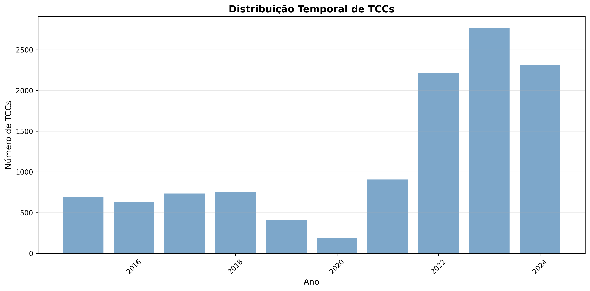
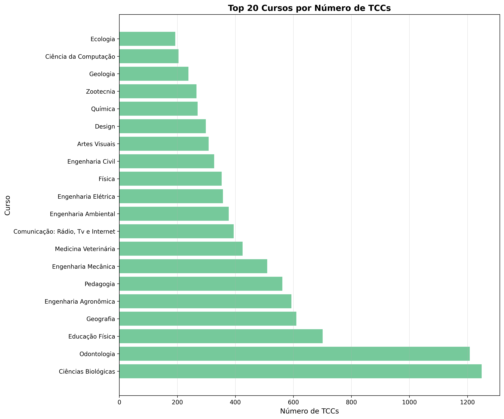
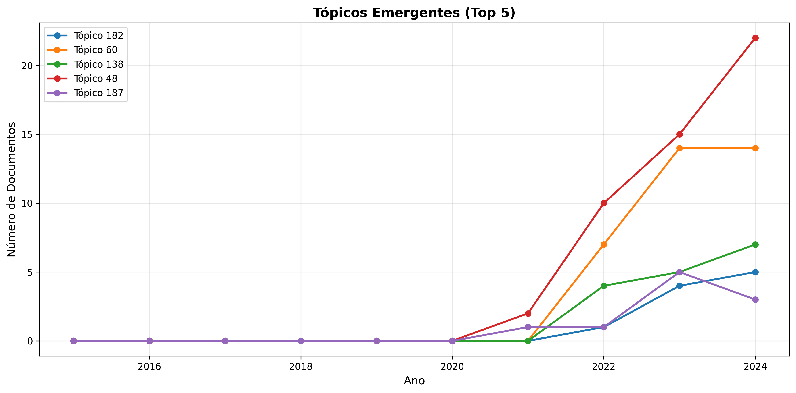
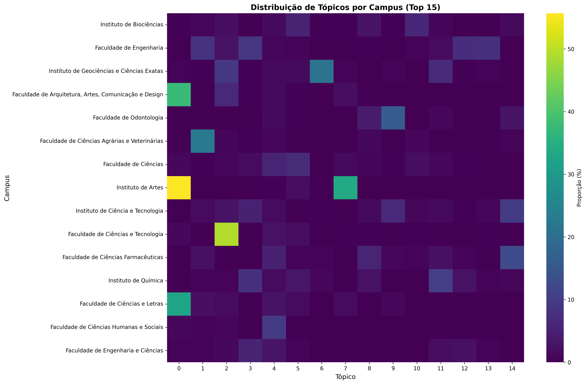

Automated Bardin Content Analysis Applied to Unesp's Academic Production
Introduction
The systematic analysis of institutional academic production represents a fundamental challenge for understanding research trends, areas of interest, and the evolution of knowledge in universities. In the context of São Paulo State University (Unesp), with multiple campuses distributed throughout the state of São Paulo, this task becomes even more complex due to the volume and diversity of scientific production.
This work addresses the central question: “What have Unesp undergraduate students produced in the last 10 years?”. This question unfolds into specific questions about disciplinary preferences, temporal evolution of research topics, geographic distribution of areas of interest, and emerging patterns in academic production.
To answer these questions, a computational system was developed that integrates the classic Content Analysis methodology proposed by Laurence Bardin1 with current deep learning and natural language processing (NLP) techniques. This hybrid approach maintains the methodological rigor of traditional qualitative analysis while enabling the processing of large data volumes through automated algorithms.
The main objective of this work is to develop and validate the system applied to Unesp’s academic production, specifically the undergraduate theses (TCCs) produced between 2015 and 2024.
Specifically, the authors seek to (a) computationally implement the three phases of Bardin’s methodology through NLP and machine learning techniques, (b) identify and characterize the main research topics present in the TCCs through automatic topic modeling, (c) analyze the temporal evolution of identified topics, detecting emerging and declining trends, and (d) map the geographic and disciplinary distribution of topics among different campuses and courses.
Literature Review
Bardin’s Content Analysis
Content Analysis, as systematized by Laurence Bardin1, is defined as “a set of communication analysis techniques aimed at obtaining, through systematic and objective procedures for describing message content, indicators (quantitative or not) that allow the inference of knowledge related to the production/reception conditions (inferred variables) of these messages.”
The methodology is structured in three fundamental phases:
-
Pre-analysis: Organization of material and systematization of initial ideas. Includes floating reading, document selection, hypothesis and objective formulation, and indicator development.
-
Material exploration: Systematic application of decisions made in pre-analysis. Consists essentially of coding, decomposition, or enumeration operations, according to previously formulated rules.
-
Treatment of results and interpretation: Raw results are processed to be meaningful and valid. Simple or complex statistical operations allow the establishment of result tables, diagrams, figures, and models.
Topic Modeling and BERTopic
Topic modeling refers to a family of unsupervised machine learning algorithms designed to discover latent thematic structures in large document collections2. Traditionally, methods such as Latent Dirichlet Allocation (LDA) dominate the field, modeling documents as probabilistic mixtures of topics.
BERTopic, introduced by Grootendorst3, represents a significant evolution in this area, combining pre-trained language embeddings with clustering techniques to create more coherent and interpretable topic representations. The algorithm follows a modular pipeline:
-
Embedding Generation: Use of pre-trained language models (BERT, Sentence-BERT) to create dense vector representations of documents.
-
Dimensionality Reduction: Application of Uniform Manifold Approximation and Projection (UMAP) to reduce embedding dimensionality, preserving local and global structures4.
-
Clustering: Use of Hierarchical Density-Based Spatial Clustering of Applications with Noise (HDBSCAN) to identify clusters of semantically similar documents5.
-
Topic Representation: Extraction of representative words through class-based TF-IDF (c-TF-IDF), a variation of traditional TF-IDF6 adapted for clustering contexts3.
Natural Language Processing in Portuguese
Processing texts in Portuguese presents specific challenges related to the language’s rich morphology7, including complex verbal conjugations, gender and number agreement, and extensive use of clitics. For this work, the spaCy pt_core_news_lg model was used, specifically trained for Brazilian Portuguese, offering tokenization, lemmatization, morphosyntactic analysis, and named entity recognition capabilities8.
Mathematical Foundations of Algorithms
Linguistic Processing with spaCy
spaCy implements a linguistic processing pipeline based on convolutional neural networks (CNN). The main operations performed are:
-
Tokenization: Text segmentation into tokens using Portuguese-specific linguistic rules and regular expression patterns. Each document \(D\) is transformed into a sequence of tokens \(T = {t_1, t_2, …, t_n}\).
-
Lemmatization: Reduction of each token to its canonical form (lemma) through a trained statistical model. For each token \(t_i\), lemmatization maps \(\text{lemma}(t_i) = l_i\), where \(l_i\) represents the base form of the word, removing verbal inflections, plurals, and other morphological variations.
-
Part-of-Speech (POS) Tagging: spaCy uses a convolutional neural network to classify each token into grammatical categories. The probability of a token \(t_i\) belonging to POS class \(c_j\) is calculated through \(P(c_j \mid t_i) = \text{softmax}(\mathbf{W} \cdot \text{CNN}(t_i) + \mathbf{b})_j\), where \(\mathbf{W}\) are the classification layer weights, \(\text{CNN}(t_i)\) is the token’s vector representation, and \(\mathbf{b}\) is the bias vector.
Term Frequency-Inverse Document Frequency (TF-IDF)
TF-IDF is a statistical measure that evaluates the importance of a term in a document within a corpus. It is calculated as the product of two components:
Term Frequency (TF):
\[ \text{TF}(t, d) = \frac{f_{t,d}}{\sum_{t’ \in d} f_{t’,d}} \]
where \(f_{t,d}\) is the raw frequency of term \(t\) in document \(d\).
Inverse Document Frequency (IDF):
\[ \text{IDF}(t, D) = \log\left(\frac{N}{\mid{d \in D : t \in d}\mid}\right) \]
where \(N\) is the total number of documents and \(\mid{d \in D : t \in d}\mid\) is the number of documents containing term \(t\).
The final TF-IDF is therefore obtained with \(\text{TF-IDF}(t, d, D) = \text{TF}(t, d) \times \text{IDF}(t, D)\). This metric penalizes very frequent terms (like stopwords) and values distinctive terms of specific documents.
Semantic Embeddings (Sentence-Transformers)
The paraphrase-multilingual-mpnet-base-v2 model uses a transformer architecture9 with mean pooling to generate dense vector representations of sentences. For an input sequence \(\mathbf{X} = [\mathbf{x}_1, …, \mathbf{x}_n]\), the multi-head attention mechanism calculates:
\[ \text{Attention}(\mathbf{Q}, \mathbf{K}, \mathbf{V}) = \text{softmax}\left(\frac{\mathbf{Q}\mathbf{K}^T}{\sqrt{d_k}}\right)\mathbf{V} \]
where \(\mathbf{Q}\) (queries), \(\mathbf{K}\) (keys) and \(\mathbf{V}\) (values) are linear projections of the input, and \(d_k\) is the dimension of the keys.
The final document representation is obtained by averaging all token representations,
\[ \mathbf{e}_d = \frac{1}{n}\sum_{i=1}^{n} \mathbf{h}_i \]
where \(\mathbf{h}_i\) is the contextualized representation of token \(i\) in the transformer’s last layer, and \(\mathbf{e}_d \in \mathbb{R}^{384}\) is the document’s final embedding.
Uniform Manifold Approximation and Projection (UMAP)
UMAP reduces embedding dimensionality while preserving local and global topological structures. The algorithm is based on Riemannian manifold theory and algebraic topology4. For each point \(x_i\), a normalized distance to the \(k\) nearest neighbors is defined,
\[ d_i(x_i, x_j) = \max\left(0, \frac{\Vert x_i - x_j \Vert - \rho_i}{\sigma_i}\right) \]
where \(\rho_i\) is the distance to the nearest neighbor and \(\sigma_i\) is a normalization factor.
The connection probability between \(x_i\) and \(x_j\) in high-dimensional space is
\[ w_{ij} = \exp(-d_i(x_i, x_j)) \]
UMAP minimizes cross-entropy divergence between high and low-dimensional graphs via
\[ \mathcal{L} = \sum_{i,j} w_{ij} \log\left(\frac{w_{ij}}{v_{ij}}\right) + (1-w_{ij})\log\left(\frac{1-w_{ij}}{1-v_{ij}}\right) \]
where \(v_{ij}\) are the weights in low-dimensional space, calculated analogously.
Hierarchical DBSCAN (HDBSCAN)
HDBSCAN is a density-based hierarchical clustering algorithm that identifies clusters of different densities and sizes5. For two points \(x_i\) and \(x_j\), the mutual reachability distance is defined as
\[ d_{\text{mreach}-k}(x_i, x_j) = \max \left\{ \text{core}_k(x_i), \text{core}_k(x_j), d(x_i, x_j) \right\} \]
where \(\text{core}_k(x_i)\) is the distance to the \(k\)-th nearest neighbor of \(x_i\) (with \(k\) = min_cluster_size).
The algorithm constructs a minimum spanning tree (MST) over the complete graph with weights \(d_{\text{mreach}-k}\). The MST minimizes
\[ \sum_{(i,j) \in \text{MST}} d_{\text{mreach}-k}(x_i, x_j) \]
Then, edges are iteratively removed from the MST in descending order of weight, creating a hierarchy of clusters. For each level \(\epsilon\), a cluster is stable if its “persistence” (number of points multiplied by lifetime) is high.
The Excess of Mass (EOM) method selects clusters that maximize:
\[ \text{Stability}(C) = \sum_{x_i \in C} (\lambda_{x_i} - \lambda_{\text{birth}}) \]
where \(\lambda = 1/\epsilon\) is the inverse density parameter, and \(\lambda_{\text{birth}}\) is the density when the cluster is born in the hierarchy.
Points that do not belong to any stable cluster are classified as outliers.
Class-based TF-IDF (c-TF-IDF)
BERTopic uses a variation of traditional TF-IDF adapted for clustering contexts. While traditional TF-IDF operates at the document level, c-TF-IDF treats each cluster as a single “document”:
\[ W_{t,c} = tf_{t,c} \times \log\left(\frac{m}{df_t}\right) \]
where \(W_{t,c}\) is the weight of term \(t\) in cluster \(c\), \(tf_{t,c}\) is the sum of term frequencies in all documents of the cluster, \(m\) is the total number of clusters, and \(df_t\) is the number of clusters containing term \(t\).
This approach allows extraction of terms that are distinctive of each cluster, generating interpretable representations of identified topics.
Methodology
System Architecture
The developed system implements a modular pipeline-based architecture, organized into five distinct stages corresponding to Bardin’s methodology phases adapted to the computational context:
stateDiagram-v2
[*] --> Collection
Collection: Data Collection
state Collection {
[*] --> CreateDB
CreateDB --> Page
Page --> ExtractMeta
ExtractMeta --> Normalize
Normalize --> SaveDB
Normalize --> SaveJSON
SaveDB --> [*]
SaveJSON --> [*]
CreateDB: Create empty database
Page: HTTP request with pagination and retry
ExtractMeta: Extract JSON metadata from API
Normalize: Normalize values
SaveDB: Save metadata in relational database
SaveJSON: Save metadata backup in JSON
}
Collection --> Preprocessing
Preprocessing: Preprocessing
state Preprocessing {
[*] --> LoadDB
LoadDB --> DetectLang
DetectLang --> FilterPortuguese
FilterPortuguese --> TextCleaning
TextCleaning --> Vectorization
Vectorization --> SaveCorpus
SaveCorpus --> [*]
LoadDB: Load TCCs from database
DetectLang: Detect language with confidence
FilterPortuguese: Filter only Portuguese
TextCleaning: Tokenization + Lemmatization + Stopword removal
Vectorization: Create TF-IDF matrix (unigrams, bigrams, trigrams)
SaveCorpus: Save processed corpus + vectorizer
}
Preprocessing --> PreAnalysis
PreAnalysis: BARDIN PHASE 1 - Pre-analysis
state PreAnalysis {
[*] --> LoadCorpus1
LoadCorpus1 --> DescStats
DescStats --> TempAnalysis
DescStats --> GeoAnalysis
DescStats --> LexAnalysis
TempAnalysis --> GenViz1
GeoAnalysis --> GenViz1
LexAnalysis --> GenViz1
GenViz1 --> GenReport1
GenReport1 --> [*]
LoadCorpus1: Load processed corpus
DescStats: Calculate descriptive statistics
TempAnalysis: Temporal distribution by year/course
GeoAnalysis: Distribution by campus and course
LexAnalysis: Word frequency and vocabulary
GenViz1: Generate visualizations
GenReport1: Generate pre-analysis textual report
}
PreAnalysis --> TopicModeling
TopicModeling: BARDIN PHASE 2 - Material Exploration
state TopicModeling {
[*] --> LoadCorpus2
LoadCorpus2 --> GenEmbeddings
GenEmbeddings --> DimReduction
DimReduction --> Clustering
Clustering --> ExtractTopics
ExtractTopics --> AssignTopics
AssignTopics --> GenViz2
GenViz2 --> SaveModel
SaveModel --> [*]
LoadCorpus2: Load processed corpus
GenEmbeddings: Generate semantic embeddings of documents
DimReduction: Dimensionality reduction with UMAP (5D, cosine)
Clustering: Hierarchical clustering with HDBSCAN
ExtractTopics: Extract keywords with c-TF-IDF
AssignTopics: Assign topic to each document
GenViz2: Generate visualizations
SaveModel: Save model + corpus with topics
}
TopicModeling --> Interpretation
Interpretation: BARDIN PHASE 3 - Interpretation
state Interpretation {
[*] --> LoadTopics
LoadTopics --> TemporalAnalysis
LoadTopics --> GeographicAnalysis
LoadTopics --> CourseAnalysis
TemporalAnalysis --> IdentTrends
IdentTrends --> TestSignificance
GeographicAnalysis --> TestSignificance
CourseAnalysis --> InterpretSynthesis
TestSignificance --> InterpretSynthesis
InterpretSynthesis --> GenViz3
GenViz3 --> GenReport3
GenReport3 --> [*]
LoadTopics: Load corpus with topics + model
TemporalAnalysis: Group by year + topic
IdentTrends: Linear regression (emerging/declining)
GeographicAnalysis: Campus×topic contingency matrix
TestSignificance: Chi-square independence test
CourseAnalysis: Topic analysis by specific course
InterpretSynthesis: Cross temporal + geographic analyses
GenViz3: Generate visualizations
GenReport3: Generate final interpretive report
}
Interpretation --> [*]
Data Collection
Data collection was performed through Unesp’s institutional repository API, implementing an HTTP client with error handling and automatic retry. We exclusively used work abstracts. Search parameters included:
- Document type: “Undergraduate thesis”
- Language: Portuguese (por)
- Period: 2015-2024
- Extracted fields: UUID, handle, title, abstract, publication date, campus, course, authors, advisors, keywords

The process resulted in the collection of 13,213 documents, stored in a SQLite database with a normalized schema to ensure referential integrity. Of these, 13,112 have abstracts and titles in Portuguese and could be used in this study.
Implementation of Bardin’s Phases
Pre-Analysis
Computational pre-analysis included:
- Descriptive Statistics: Total documents, temporal period, distribution by campus/course
- Exploratory Analysis: Visualizations of temporal, geographic, and disciplinary distributions
- Word Cloud: Visual representation of the most frequent words in the corpus
Material Exploration
Topic modeling was performed through BERTopic with the following hyperparameters:
Embeddings:
- Model:
paraphrase-multilingual-mpnet-base-v2 - Dimension: 384
UMAP:
n_neighbors= 15n_components= 5min_dist= 0.0metric= ‘cosine’
HDBSCAN:
min_cluster_size= 10metric= ‘euclidean’cluster_selection_method= ‘eom’
Treatment and Interpretation
Result interpretation involved three main analyses:
- Temporal Analysis: Trend identification through linear regression for each topic. The normalized coefficient is calculated as
\[ \beta_{norm} = \frac{\beta_1}{\bar{y}} \]
The system classifies topics based on the normalized coefficient to identify emerging, stable, or declining trends.
- Geographic Analysis: chi-square independence test between campus and topic:
\[ \chi^2 = \sum_{i,j} \frac{(O_{ij} - E_{ij})^2}{E_{ij}} \]
where \(O_{ij}\) is the observed frequency and \(E_{ij}\) is the expected frequency under the independence hypothesis.
- Course Analysis: Identification of predominant topics in each undergraduate program through relative frequency analysis.
Results and Discussion
General Corpus Statistics
Corpus analysis revealed the following characteristics:
- Total processed documents: 13,112
- Temporal period: 2015-2024
- Unique campuses: 27
- Unique courses: 64
- Unique authors: 13,356
- Unique advisors: 4,605
The temporal distribution of TCCs shows significant growth from 2021, with peaks in 2023 (2,771 documents) and 2024 (2,311 documents), suggesting improvements in the institutional repository submission process.
The five main institutes/faculties in terms of production were:
- Institute of Biosciences: 2,209 TCCs
- Faculty of Engineering: 2,083 TCCs
- Faculty of Architecture, Arts, Communication and Design: 1,037 TCCs
- Faculty of Dentistry: 1,031 TCCs
- Institute of Geosciences and Exact Sciences: 1,005 TCCs

The courses with the highest production were:
- Biological Sciences: 1,249 TCCs
- Dentistry: 1,208 TCCs
- Physical Education: 701 TCCs
- Geography: 610 TCCs
- Agronomic Engineering: 593 TCCs
- Pedagogy: 562 TCCs
- Mechanical Engineering: 510 TCCs
- Veterinary Medicine: 425 TCCs
- Communication: Radio, TV and Internet: 394 TCCs
- Environmental Engineering: 377 TCCs

Topic Identification and Characterization
The BERTopic model identified 188 distinct topics, covering 66.1% of the corpus (8,661 documents). The remaining documents (33.9%) were classified as outliers (topic -1), indicating very specific or interdisciplinary content that does not cluster clearly.
The 10 most prevalent topics were:
| Topic | Documents | Keywords | Thematic Area |
|---|---|---|---|
| 0 | 527 | art, artistic, artist, theater | Arts |
| 1 | 381 | plant, productivity, soy, dose | Agronomy |
| 2 | 344 | urban, city, space, neighborhood | Urban Geography |
| 3 | 190 | company, lean, improvement, management | Administration |
| 4 | 190 | pandemic, covid, covid 19 | Public Health |
| 5 | 167 | education, school, teaching, teacher | Education |
| 6 | 160 | rock, deposit, mineral, mine | Geology |
| 7 | 159 | musical, music, composer | Music |
| 8 | 139 | cancer, cell, tumoral, tumor | Oncology |
| 9 | 131 | bone, zol, rat | Dentistry/Medicine |
See all topics
| topic | quantity_works | topic_label |
|---|---|---|
| -1 | 4451 | -use perform present data |
| 0 | 527 | art artistic artist theater |
| 1 | 381 | plant productivity soy dose |
| 2 | 344 | urban city space neighborhood |
| 3 | 190 | company lean improvement management |
| 4 | 190 | pandemic covid covid 19 |
| 5 | 167 | education school teaching teacher |
| 6 | 160 | rock deposit mineral mine |
| 7 | 159 | musical music composer musical education |
| 8 | 139 | cancer cell tumoral tumor |
| 9 | 131 | bone zol rat |
| 10 | 127 | species conservation biodiversity landscape |
| 11 | 127 | property material film synthesis |
| 12 | 120 | steel machining cutting aluminum |
| 13 | 117 | construction civil construction civil concrete |
| 14 | 115 | biofilm extract strain antimicrobial |
| 15 | 97 | science teaching scientific didactic |
| 16 | 95 | environmental education environmental education nature |
| 17 | 94 | photovoltaic solar energy electric |
| 18 | 92 | toxicity concentration metal effluent |
| 19 | 83 | quantum particle equation theory |
| 20 | 82 | geography geography teaching teaching geographic |
| 21 | 82 | biogas biodiesel methane biomass |
| 22 | 79 | resin color specimen roughness |
| 23 | 78 | aerodynamic aircraft flow flight |
| 24 | 78 | water hydric basin water resource |
| 25 | 78 | energy electric electric energy energetic |
| 26 | 77 | disease cruzi chagas leishmaniasis |
| 27 | 75 | sexuality gender sexual woman |
| 28 | 74 | species genus family morphological |
| 29 | 73 | patient health nurse hospitalization |
| 30 | 72 | rural agriculture farmer family |
| 31 | 70 | juridical penal law justice |
| 32 | 70 | financial market portfolio investment |
| 33 | 68 | rat sperm maternal gestational |
| 34 | 68 | child infant play infant education |
| 35 | 67 | patient tooth occlusion fracture |
| 36 | 63 | journalism documentary reportage photography |
| 37 | 63 | radiation radiotherapy dose beam |
| 38 | 62 | country economic china latin |
| 39 | 62 | waste solid waste solid solid waste |
| 40 | 60 | reading writing child infant |
| 41 | 59 | woman feminine feminism feminist |
| 42 | 53 | electric grid distribution energy |
| 43 | 52 | dance physical education gymnastics physical |
| 44 | 52 | physical physical activity exercise physical exercise |
| 45 | 51 | dog surgical clinical urinary |
| 46 | 50 | soccer player match game |
| 47 | 50 | mathematics mathematical student teaching |
| 48 | 49 | veterinary internship veterinary curricular internship |
| 49 | 47 | cow dairy milk national international |
| 50 | 46 | enamel naf tmp dentifrice |
| 51 | 44 | company business innovation startup |
| 52 | 44 | meat chicken poultry weight |
| 53 | 44 | veterinary internship curricular internship veterinary medicine |
| 54 | 43 | fish tilapia fillet growth |
| 55 | 42 | communication public public communication bauru |
| 56 | 42 | chromosome dna sequence genome |
| 57 | 41 | athlete sport anxiety sports |
| 58 | 41 | teacher affectivity learning student |
| 59 | 40 | sugarcane sugar sugarcane cultivar |
| 60 | 39 | fishing species coast stranding |
| 61 | 38 | sport physical education sports athletics |
| 62 | 37 | smile aesthetic tooth aesthetics |
| 63 | 37 | tension simulation suspension sae |
| 64 | 37 | fungus insect pest ant |
| 65 | 37 | environmental company esg sustainability |
| 66 | 36 | arterial cardiac cardiovascular cardiovascular disease |
| 67 | 36 | technology student learning class |
| 68 | 36 | violence woman gender obstetric |
| 69 | 36 | ring orbit orbital satellite |
| 70 | 35 | fire cerrado burn burning |
| 71 | 35 | game electronic game game electronic |
| 72 | 34 | transport highway road aviation |
| 73 | 34 | parkinson walking parkinson disease postural |
| 74 | 34 | enzyme lipase enzymatic laccase |
| 75 | 33 | seed dispersal bird species |
| 76 | 33 | lignin ethanol cellulose biomass |
| 77 | 33 | stress anxiety depression response |
| 78 | 33 | eucalyptus height tree genotype |
| 79 | 32 | obesity obese exercise physical exercise |
| 80 | 32 | extract medicinal tea plant |
| 81 | 31 | automation device home automation internet |
| 82 | 31 | periodontal periodontitis periodontal disease disease |
| 83 | 31 | available available available |
| 84 | 31 | disability inclusive visual disability student |
| 85 | 30 | recognition voice biometric facial recognition |
| 86 | 30 | dentistry dental oral dentist |
| 87 | 29 | composite fatigue aeronautical material |
| 88 | 29 | touristic tourism event tourist |
| 89 | 29 | alloy titanium surface implant |
| 90 | 29 | certification construction sustainable ecotechnique |
| 91 | 29 | violence bullying school school violence |
| 92 | 29 | meat cheese bovine animal |
| 93 | 28 | asd autistic spectrum autistic spectrum disorder |
| 94 | 28 | nest reproductive bird egg |
| 95 | 28 | pain lumbar lumbar pain trunk |
| 96 | 28 | hepatitis hiv aids syphilis |
| 97 | 26 | climatic coemission climatic change |
| 98 | 26 | attack detection machine learning malicious |
| 99 | 26 | yoga martial yoga practice practice |
| 100 | 26 | available available available |
| 101 | 26 | social network meme social communication |
| 102 | 26 | design fashion brand piece |
| 103 | 26 | circuit voltage simulation power factor |
| 104 | 25 | black racism racial black population |
| 105 | 25 | physical education physical teacher teaching |
| 106 | 25 | diabetes mellitus diabetes mellitus hemoglobin |
| 107 | 25 | flooding flood susceptibility stream |
| 108 | 25 | wood panel glue destructive |
| 109 | 24 | cannabis drug psychoactive substance |
| 110 | 24 | image exam radiography calcification |
| 111 | 23 | milk breed herd milk production |
| 112 | 23 | eclampsia endothelial pre eclampsia dysfunction |
| 113 | 23 | environmental sustainable policy sustainability |
| 114 | 23 | elderly aging flexibility walking |
| 115 | 22 | code optical channel noise |
| 116 | 22 | pfa response ventilatory neuron |
| 117 | 22 | restoration resin composite resin composite |
| 118 | 21 | precipitation meteorological rain event |
| 119 | 21 | image neural network neural classification |
| 120 | 21 | mta cement tube bio |
| 121 | 21 | dengue mosquito aedes aegypti |
| 122 | 21 | muscular jmt muscle myotendinous junction |
| 123 | 21 | robot robotic manipulator kinematics |
| 124 | 21 | cosmetic product skin formulation |
| 125 | 20 | war conflict israel international |
| 126 | 20 | luxury brand communication organization |
| 127 | 20 | antenna directivity array lobe |
| 128 | 20 | inflammatory intestinal inflammatory intestinal git |
| 129 | 19 | ozone ozonize mitochondrial water |
| 130 | 19 | muscular training hypertrophy strength |
| 131 | 18 | hepatic liver phytosanitary metabolism |
| 132 | 18 | pdt photodynamic photodynamic therapy blue |
| 133 | 18 | implant peri prosthesis patient |
| 134 | 18 | aquifer groundwater groundwater groundwater |
| 135 | 18 | bee insecticide clferrão |
| 136 | 17 | venom snake accident toxin |
| 137 | 17 | sanitation environmental sewage soil |
| 138 | 17 | anti helminthic helminthic anti opg |
| 139 | 17 | acid butyric butyric carvacrol thymol |
| 140 | 17 | animal zoo enrichment animal behavior |
| 141 | 17 | biology science science teaching biology |
| 142 | 17 | african afro racial afro brazilian |
| 143 | 17 | data cloud centers data |
| 144 | 17 | electoral political party election |
| 145 | 17 | china export brazil import |
| 146 | 17 | elderly elderly population robot population |
| 147 | 16 | born baby newborn newborn |
| 148 | 16 | renal hemodialysis aki ckd |
| 149 | 16 | food food insecurity insecurity school food |
| 150 | 16 | radicular tooth post laser |
| 151 | 16 | sleep obstructive sleep apnea obstructive |
| 152 | 16 | app mobile technology stroke |
| 153 | 16 | adhesive bond resistance bond post |
| 154 | 15 | erosion erosive soil erosive process |
| 155 | 15 | coffee coffee plant soil cover |
| 156 | 15 | child adolescent adolescent shelter social worker |
| 157 | 15 | law succession adoption family |
| 158 | 15 | implant implant surface surface resonance frequency |
| 159 | 15 | plastic bioplastic microplastic pellet |
| 160 | 15 | pharmacy colorant recommendation pharmacy live |
| 161 | 14 | cement silica active hydrogel sand |
| 162 | 14 | pe injection rat induction |
| 163 | 14 | citri canker citrus bacteria |
| 164 | 14 | literacy foreign text pandemic |
| 165 | 14 | mangrove coral reefs bleaching |
| 166 | 14 | soccer woman sport sports |
| 167 | 14 | public communication corporate reticular communication |
| 168 | 13 | microhabitats animal fid behavior |
| 169 | 13 | deaf libras ivc sign |
| 170 | 13 | controller feedback lmi linear |
| 171 | 13 | signal spindle ecg eeg |
| 172 | 13 | monetary crisis monetary policy inflation |
| 173 | 13 | fascism french refugee adorno |
| 174 | 13 | heat exchanger heat exchanger heat transfer |
| 175 | 12 | vegetation index vegetation spatial variability |
| 176 | 12 | audiovisual production post production audiovisual product |
| 177 | 12 | skin cream cutaneous oil |
| 178 | 12 | soccer acceleration athlete test |
| 179 | 12 | copyright copyright law legal intellectual property |
| 180 | 12 | vibration frequency filter predictive maintenance |
| 181 | 12 | tuberculosis mycobacterium mycobacterium tuberculosis tuberculosis |
| 182 | 11 | algorithm topology radial power flow |
| 183 | 11 | waste waste management solid waste solid waste |
| 184 | 11 | pasture supplementation nitrogen ruminal |
| 185 | 10 | sport basketball volleyball free throw |
| 186 | 10 | muscular muscle core crossfit |
| 187 | 10 | cancer cervix cervix uterus uterus |
Temporal Topic Analysis
Temporal analysis revealed significant patterns in topic evolution throughout the studied period:

It is also possible to determine emerging and declining topics. Topics identified with the highest growth include:
- Topic 182 (Algorithms and Electrical Networks): Growth in optimization and topology of electrical systems
- Topic 60 (Fishing and Marine Biodiversity): Growth in marine ecology and coastal conservation studies
- Topic 138 (Veterinary Parasitology): Growth in parasite control and animal health
- Topic 48 (Veterinary Medicine - Internships): Growth in practical training and curricular internships
- Topic 187 (Gynecological Cancer): Growth in cervical cancer research

Among topics with a declining trend, suggesting changes in research priorities, are:
- Topic 108 (Wood Engineering): Decline in studies on wood panels and destructive testing
- Topic 158 (Advanced Implantology): Reduction in research on implant surfaces and osseointegration
- Topic 151 (Sleep Disorders): Decline in studies on obstructive sleep apnea
- Topic 145 (China-Brazil Trade): Reduction in export and import analyses with China
- Topic 63 (Automotive Engineering): Decline in suspension simulation studies and SAE projects

Geographic Analysis
The chi-square test implemented in the system evaluates independence between campus and topic distribution, allowing identification of regional specializations:

Some of the identified specialization patterns are:
Institute of Biosciences:
- Topic 10 (5.9%): Species, conservation, biodiversity, landscape - strong research in ecology and conservation
- Topic 5 (5.3%): Education, school, teaching, teacher - training of science and biology teachers
- Topic 37 (3.5%): Radiation, radiotherapy, dose, beam - radiobiology and biological effects of radiation
- Topic 16 (3.1%): Environmental education, environmental, education, nature - interface between biology and environmental education
- Topic 28 (3.1%): Species, genus, family, morphological - taxonomic and systematic studies
Faculty of Engineering:
- Topic 3 (8.9%): Company, lean, improvement, management - strong presence of production engineering and industrial management
- Topic 1 (8.2%): Urban, city, space, neighborhood - urban planning and infrastructure
- Topic 13 (7.5%): Construction, civil construction, civil, concrete - civil engineering and construction materials
- Topic 12 (7.2%): Steel, machining, cutting, aluminum - mechanical engineering and manufacturing processes
- Topic 23 (5.5%): Aerodynamic, aircraft, flow, flight - aeronautical engineering
Institute of Geosciences and Exact Sciences:
- Topic 6 (21.3%): Rock, deposit, mineral, mine - predominance of geology and mineralogy
- Topic 2 (8.9%): Urban, city, space, neighborhood - urban geography and spatial analysis
- Topic 11 (6.7%): Property, material, film, synthesis - materials science and applied physics
- Topic 19 (6.0%): Quantum, particle, equation, theory - theoretical and quantum physics
- Topic 20 (5.3%): Geography, geography teaching, teaching, geographic - geography teaching
Faculty of Dentistry:
- Topic 9 (15.9%): Bone, zol, rat - research in bone regeneration and biomaterials
- Topic 35 (9.0%): Patient, tooth, occlusion, fracture - orthodontics and maxillofacial traumatology
- Topic 22 (7.8%): Resin, color, specimen, roughness - restorative dental materials
- Topic 62 (6.0%): Smile, aesthetic, tooth, aesthetics - aesthetic dentistry
- Topic 50 (5.5%): Enamel, naf, tmp, dentifrice - prevention and cariology
Faculty of Architecture, Arts, Communication and Design:
- Topic 0 (37.6%): Art, artistic, artist, theater - massive predominance of visual and performing arts
- Topic 36 (9.0%): Journalism, documentary, reportage, photography - social communication and journalism
- Topic 41 (6.6%): Woman, feminine, feminism, feminist - gender studies in communication
- Topic 2 (6.3%): Urban, city, space, neighborhood - urbanism and architecture
- Topic 55 (5.9%): Communication, public, public communication, bauru - public relations and organizational communication

Identified Limitations
We observed three relevant limitations. The first is the high outlier rate of 33.9%. This suggests the need for hyperparameter fine-tuning or a hierarchical approach. The second concerns temporal bias: the concentration of documents in recent years may distort trends; finally, granularity may impact results, as some topics are very specific, others too broad.
Conclusions
This work demonstrated the viability and effectiveness of integrating Bardin’s classic Content Analysis methodology with modern Deep Learning techniques for analyzing large volumes of academic production. The developed system successfully processed 13,112 Unesp TCCs, identifying 188 distinct topics and revealing significant temporal, geographic, and disciplinary patterns.
The analysis revealed a comprehensive panorama of Unesp’s undergraduate academic production in the last decade. The 188 identified topics covered 66.1% of the corpus (8,661 documents), demonstrating BERTopic’s effectiveness in capturing latent thematic structures in Portuguese academic texts. Topic distribution revealed clear disciplinary segmentation, with the most prevalent topic (Arts) representing 527 documents, followed by Agronomy (381) and Urban Geography (344).
Temporal analysis demonstrated the system’s capability to detect emerging trends, the most emblematic case being Topic 4 (COVID-19), which showed explosive growth from 2020, capturing 190 documents related to the pandemic. Topics with the highest growth identified included Algorithms and Electrical Networks (Topic 182), Fishing and Marine Biodiversity (Topic 60), Veterinary Parasitology (Topic 138), reflecting emerging research areas and practical training.
Geographic distribution of topics revealed distinct regional specializations. The Institute of Biosciences demonstrated strong vocation for biodiversity and conservation studies (5.9% of documents in Topic 10), while the Faculty of Engineering stood out in industrial management and lean manufacturing (8.9% in Topic 3). Particularly notable was the concentration of arts studies at the Faculty of Architecture, Arts, Communication and Design (37.6% in Topic 0), and the predominance of geology at the Institute of Geosciences and Exact Sciences (21.3% in Topic 6).
Despite promising results, the work presents limitations that should be considered. The outlier rate of 33.9% suggests that a significant portion of documents has very specific or interdisciplinary content that does not fit into identified clusters. This may indicate the need for hyperparameter adjustments or implementation of hierarchical clustering approaches.
Temporal bias, with document concentration in recent years (2,771 in 2023 and 2,311 in 2024), may reflect improvements in the repository submission process, but may also distort long-term trend analysis. Future studies could benefit from temporal normalization techniques or more sophisticated time series analysis.
References
-
BARDIN, L. Content Analysis. São Paulo: Edições 70, 2016. ↩ ↩2
-
BLEI, D. M.; NG, A. Y.; JORDAN, M. I. “Latent Dirichlet Allocation”. Journal of Machine Learning Research, vol. 3, 993-1022, 2003. ↩
-
GROOTENDORST, M. “BERTopic: Neural topic modeling with a class-based TF-IDF procedure”. 10.48550/arXiv.2203.05794, 2022. ↩ ↩2
-
McINNES, L.; HEALY, J.; MELVILLE, J. “UMAP: Uniform Manifold Approximation and Projection for Dimension Reduction”. arXiv preprint arXiv:1802.03426, 2018. ↩ ↩2
-
CAMPELLO, R. J. G. B.; MOULAVI, D.; SANDER, J. “Density-Based Clustering Based on Hierarchical Density Estimates”. In: Advances in Knowledge Discovery and Data Mining. PAKDD 2013. Lecture Notes in Computer Science, vol. 7819. Berlin, Heidelberg: Springer, 2013. ↩ ↩2
-
SALTON, G.; BUCKLEY, C. “Term-weighting approaches in automatic text retrieval”. Information Processing & Management, vol. 24, no. 5, pp. 513-523, 1988. ↩
-
AIRES, R. V. X. Implementation, adaptation, combination and evaluation of taggers for Brazilian Portuguese. Dissertation (Master’s). University of São Paulo, São Carlos, 2000. ↩
-
HONNIBAL, M.; MONTANI, I.; VAN LANDEGHEM, S.; BOYD, A. “spaCy: Industrial-strength Natural Language Processing in Python”. Zenodo. https://doi.org/10.5281/zenodo.1212303, 2020. ↩
-
VASWANI, A.; SHAZEER, N.; PARMAR, N.; USZKOREIT, J.; JONES, L.; GOMEZ, A. N.; KAISER, Ł.; POLOSUKHIN, I. “Attention is all you need”. In: Advances in Neural Information Processing Systems (NeurIPS), vol. 30, pp. 5998-6008, 2017. ↩